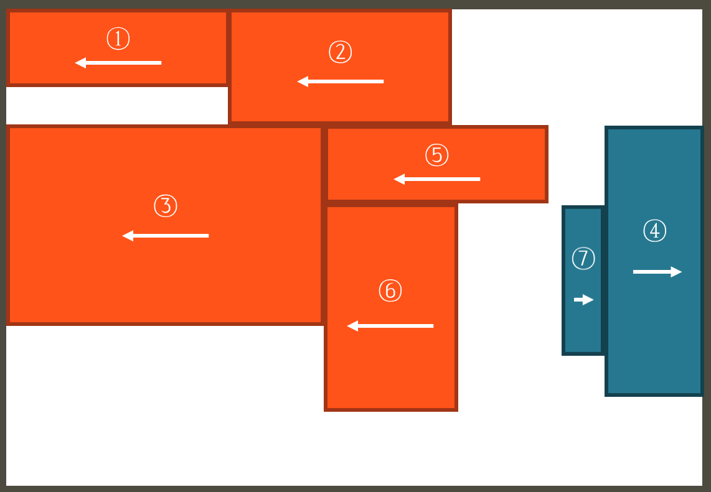
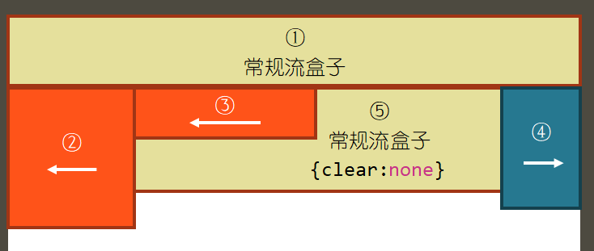
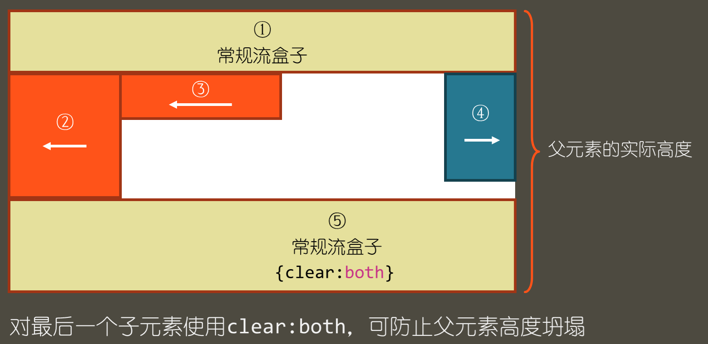

（1）常规流；
（2）浮动定位
（3）绝对定位
（1）float：left；左浮动
（2）float：right；右浮动
（3）float：none；无浮动
任何元素都可以使用浮动，无论是块级元素div、ul等等，还是行内元素都可以浮动，任何被声明float的元素都会自动被设置成块元素，有了块级元素的各种特点，可以设置宽高，可以设置内外边距。
但是很重要的一个点就是：float浮动用于布局，可以很轻松的达到靠左靠右的效果，但是，当使用完float浮动之后，一定要记住清除浮动，要不然很可能会造成高度坍塌。
（1）对于行内元素来说，使用float之后，可以设置宽度高度了；
（2）对于块级元素来说，默认占满行的块级元素，比如p标签，会自动变成内容撑开宽度，但同样可以设置宽高。
（1）左浮动的盒子向上向左排列；
（2）右浮动的盒子向上向右排列；
（3）浮动盒子的顶边不得高于上一个盒子的顶边；
（4）若剩余空间无法放下浮动的盒子，则该盒子向下移动，直至具备足够的空间可以容纳盒子，然后再向左或向右移动。

（1）浮动盒子在摆放时会避开常规流盒子；
（2）常规流盒子在摆放时会无视浮动盒子；
（3）常规流盒子在自动计算高度时，无视浮动盒子——高度坍塌。
为了避免造成高度坍塌，因此，我们经常会在完成浮动布局之后进行清除浮动。
清除浮动的几个语法：
（1）clear：none；不清除浮动；
（2）clear：left；清除左浮动，元素在左浮动盒子的下方摆放；
（3）clear：right；清除右浮动，元素在右浮动盒子的下方摆放；
（4）clear：both；清除左右浮动，元素在左右浮动盒子的下方摆放。

